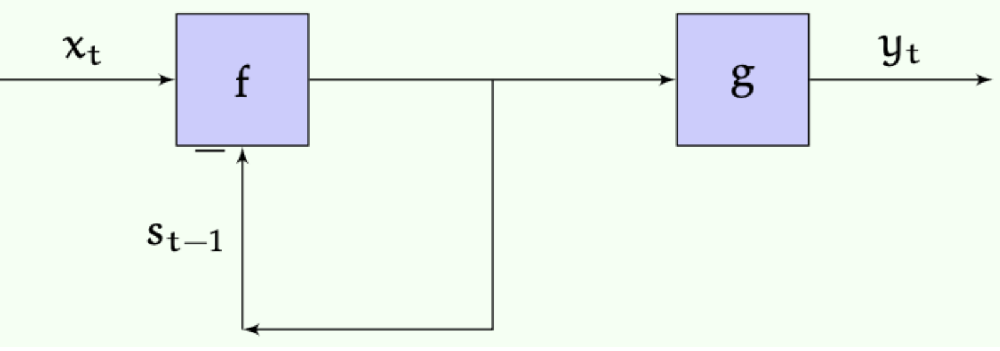
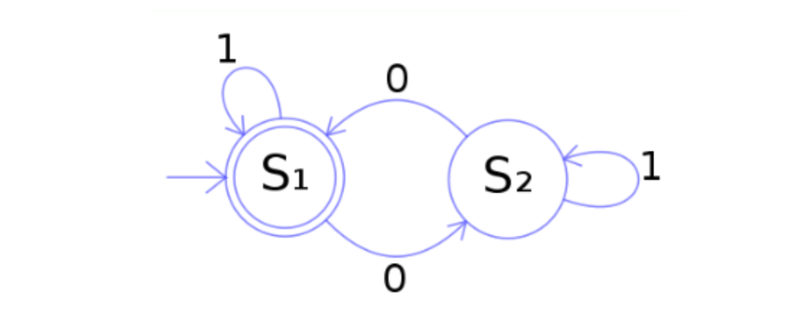

본 포스트는 서울대학교 컴퓨터공학부 · 인공지능대학원(IPAI) 박재식(Jaesik Park) 교수님의 Introduction to Machine Learning (4190.428) 강의 자료(16강 Sequential models)를 바탕으로, 강의를 처음 듣는 독자도 논리적 흐름을 따라갈 수 있도록 재구성한 것입니다. 원 강의 자료는 MIT 6.036(2019 Fall)과 Stanford CS229(2023–2024 Summer)의 강의 노트를 상당 부분 차용하고 있습니다. 여기서 세우는 MDP와 가치 반복이 17·18강 강화학습의 토대가 됩니다.
한 줄 요약 (TL;DR)
“출력이 현재 입력만의 함수가 아닐 때, 과거 전부를 기억하는 대신 ‘상태’ 하나만 들고 다니면 됩니다. 이 한 줄에서 RNN도 MDP도 강화학습도 나옵니다.”
지금까지의 모델은 모두 순수 함수 \(y = h(x)\)였습니다. 그러나 시퀀스를 다루려면 출력이 지금까지 본 모든 입력에 의존해야 합니다. 이를 감당 가능한 형태로 만드는 개념이 상태(state) — 미래를 예측하는 데 필요한 정보를 전부 압축해 담은 요약본입니다.
이 아이디어를 형식화한 것이 상태 기계 \((S, X, Y, s_0, f, g)\)이며, \(s_t = f(s_{t-1}, x_t)\)와 \(y_t = g(s_t)\) 두 줄이 전부입니다. 유한 상태 기계, 선형 시불변(LTI) 시스템, 그리고 그 비선형 버전인 RNN이 모두 이 틀의 사례입니다.
여기에 세 가지를 더하면 마르코프 결정 과정(MDP)이 됩니다 — 전이를 확률적으로 만들고, 출력을 상태 자체로 두고, 보상을 도입하는 것입니다. 이제 문제는 “다음 상태를 예측하라”에서 “기대 보상을 최대화하는 정책 \(\pi\)를 찾아라”로 바뀝니다.
유한 도달거리에서는 최적 행동이 남은 단계 수에 의존하며, \(Q^h(s,a) = R(s,a) + \sum_{s'} T(s,a,s')\max_{a'} Q^{h-1}(s',a')\)라는 재귀식을 \(h=1\)부터 쌓아 올리는 동적 계획법이 계산량을 \(O((mn)^3)\)에서 \(O(mnh)\)로 끌어내립니다.
무한 도달거리에서는 합이 발산하는 문제가 생기는데, 할인 계수 \(\gamma < 1\)이 이를 막습니다. 그러면 시간에 의존하지 않는 정적 최적 정책이 존재하고, \(\max\) 때문에 비선형이 된 벨만 방정식을 반복으로 풀어 가는 것이 가치 반복(value iteration)입니다.
1. 들어가며: 왜 순차적 모델(Sequential Models)인가?
지금까지 머신러닝에서 주로 다루어 온 모델들은 각 출력 \(y\)가 연관된 입력 \(x\)만의 함수로 생성된다고 가정하는 ‘순수 함수(pure functions)’ 형태였습니다. 즉, 출력은 오직 현재의 입력에만 의존합니다.
하지만 현실 세계의 많은 문제들은 함수 이상의 모델링을 필요로 합니다. 예를 들어:
- 순환 신경망 (Recurrent Neural Networks, RNN): 학습하는 가설(hypothesis)이 단일 입력의 함수가 아니라, 예측기가 수신한 ’입력 시퀀스 전체’의 함수가 됩니다.
- 강화학습 (Reinforcement Learning): 도메인을 순환 시스템으로 모델링하거나, 정책(policy) 자체는 순수 함수이되 정책과 도메인이 시간에 따라 상호작용하는 방식에 의해 손실(loss)이 결정됩니다.
이러한 고도화된 학습 방법을 본격적으로 다루기 전에, 순차적 또는 순환적 시스템을 모델링하는 기초적인 방법론을 이해하는 것이 필수적입니다.
2. 상태 기계 (State Machines)
2.1. 상태 기계의 개념과 정의
- 상태 기계(State machine)는 프로세스의 잠재적인 상태(states) 시퀀스를 통해 해당 프로세스를 설명하는 모델입니다. 여기서 시스템의 상태(state)란, 시스템의 미래 궤적을 가능한 한 정확하게 예측하기 위해 알아야 할 모든 정보를 의미합니다. 이는 물리적 객체의 위치와 속도가 될 수도 있고, 보드 게임에서의 말의 위치, 혹은 고속도로 네트워크의 현재 교통 밀도가 될 수도 있습니다.
상태 기계는 튜플 \((S, X, Y, s_0, f, g)\)로 정의되며, 초기 상태 \(s_0\)에서 출발해 매 시각 \(t \ge 1\)에 대해
\[s_t = f(s_{t-1}, x_t), \qquad y_t = g(s_t)\]
를 반복한다.
- 각 구성 요소는 다음과 같습니다.
- \(S\): 가능한 상태들의 유한 또는 무한 집합
- \(X\): 가능한 입력들의 유한 또는 무한 집합
- \(Y\): 가능한 출력들의 유한 또는 무한 집합
- \(s_0 \in S\): 기계의 초기 상태
- \(f: S \times X \rightarrow S\): 전이 함수(transition function). 입력과 이전 상태를 받아 다음 상태를 생성합니다.
- \(g: S \rightarrow Y\): 출력 함수(output function). 상태를 받아 출력을 생성합니다.
2.2. 상태 기계의 작동 원리
- 상태 기계의 기본적인 동작은 초기 상태 \(s_0\)에서 시작하여, \(t \ge 1\)인 각 시간 단계에 대해 다음을 반복적으로 계산하는 것입니다.
\[s_t = f(s_{t-1}, x_t)\] \[y_t = g(s_t)\]

여기서 주의할 점은, 상태 \(s_t\)가 함수 \(f\)로 다시 피드백되는 연결은 반드시 한 타임스텝 지연(delayed)되거나 버퍼링되어야 한다는 것입니다. 그렇지 않으면 연산 자체가 수학적으로 잘 정의되지 않습니다.
결과적으로, 입력 시퀀스 \(x_1, x_2, \dots\)가 주어지면 기계는 다음과 같은 출력 시퀀스를 생성합니다. \[y_1 = g(f(s_0, x_1)), \quad y_2 = g(f(f(s_0, x_1), x_2)), \dots\]
시간 \(t\)에서의 출력은 1부터 \(t\)까지의 모든 이전 입력에 의존할 수 있습니다.
2.3. 유한 상태 기계 (Finite State Machines)와 시각화
- 가장 흔한 형태는 \(S, X, Y\)가 모두 유한 집합인 유한 상태 기계(FSM)입니다. 이는 종종 노드(상태)와 아크(전이)로 구성된 상태 전이도(state transition diagrams)를 통해 시각적으로 표현됩니다.

- 위 그림의 기계는 이진 문자열을 읽어 해당 문자열에 포함된 0의 개수의 홀짝성(parity)을 결정합니다. 입력된 문자열이 짝수 개의 0을 포함할 때만 최종적으로 상태 \(S_1\)에서 끝나게 됩니다.
2.4. LTI 시스템과 RNN의 관계
상태 기계의 또 다른 중요한 변형은 신호 처리 및 제어에서 널리 쓰이는 선형 시불변(Linear Time-invariant, LTI) 시스템입니다. 이 경우 상태, 입력, 출력 공간은 각각 \(S = \mathbb{R}^m\), \(X = \mathbb{R}^l\), \(Y = \mathbb{R}^n\) 형태의 연속 공간이며, \(f\)와 \(g\)는 선형 함수입니다. 이산 시간(discrete time)에서는 다음과 같은 선형 차분 방정식으로 정의될 수 있습니다. \[y[t] = 3y[t-1] + 6y[t-2] + 5x[t] + 3x[t-2]\]
이러한 시스템은 관련 있는 이전 입력 및 출력 정보를 저장하기 위해 ’상태’를 활용하여 구현됩니다.
순환 신경망(RNN)은 근본적으로 이 LTI 시스템의 비선형 버전과 매우 유사합니다. RNN의 전이 함수와 출력 함수는 다음과 같이 정의됩니다. \[f(s, x) = f_1(W^{sx}x + W^{ss}s + W_0^{ss})\] \[g(s) = f_2(W^o s + W_0^o)\]
- 여기서 \(W\) 행렬들은 학습 가능한 가중치 행렬이며, \(f_1, f_2\)는 비선형 활성화 함수입니다. 이러한 RNN의 가중치 값들은 경사 하강법(gradient descent)을 사용하여 학습할 수 있습니다.
3. 마르코프 결정 과정 (Markov Decision Processes, MDP)
3.1. MDP의 개념
- 마르코프 결정 과정(MDP)은 상태 기계의 한 변형으로, 다음과 같은 중요한 차이점을 갖습니다.
- 확률적 전이 (Stochastic Transition): 전이 함수가 결정론적이 아니라 확률적입니다. 즉, 이전 상태와 입력이 주어졌을 때 다음 상태에 대한 확률 분포를 정의하며, 매번 평가될 때마다 해당 분포에서 새로운 상태를 추출(draw)합니다.
- 출력과 상태의 일치: MDP에서는 출력이 곧 상태 자체입니다 (즉, 출력 함수 \(g\)는 항등 함수입니다).
- 보상(Reward)의 존재: 특정 상태(또는 상태-행동 쌍)는 다른 것들보다 더 바람직하며, 이를 보상으로 수치화합니다.
- MDP는 싱글 플레이어 게임과 같이 외부 “세계”와의 상호작용을 모델링하는 데 사용됩니다. 우리는 상태 집합 \(S\)와 행동 집합 \(A\)(상태 기계의 입력 \(X\)에 해당)가 유한한 경우에 초점을 맞춥니다. 에이전트는 환경을 MDP로 모델링하고, 프로세스를 높은 점수(보상)를 받을 수 있는 상태로 이끄는 행동을 선택하려고 시도합니다.
3.2. MDP의 공식적 정의
- MDP는 튜플 \((S, A, T, R, \gamma)\)로 정의됩니다.
- \(T: S \times A \times S \rightarrow \mathbb{R}\): 전이 모델(Transition model). \(T(s, a, s') = P(S_t = s' | S_{t-1} = s, A_{t-1} = a)\) 와 같이 조건부 확률 분포를 지정합니다.
- \(R: S \times A \rightarrow \mathbb{R}\): 보상 함수(Reward function). 상태 \(s\)에서 행동 \(a\)를 취하는 것이 얼마나 바람직한지 수치로 나타냅니다.
- \(\gamma \in [0, 1]\): 할인 계수(Discount factor).
- 여기서 에이전트의 전략을 정책(Policy)이라고 부르며, \(\pi: S \rightarrow A\)라는 함수로 정의되어 각 상태에서 어떤 행동을 취할지 지정합니다.
4. 유한 도달거리 솔루션 (Finite-Horizon Solutions)
- MDP가 주어졌을 때 우리의 목표는 도메인이 만드는 확률적인 전이 위에서 기대되는 총 보상을 최대로 만드는 최적 정책(optimal policy)을 찾는 것입니다. 우선, 에이전트가 MDP와 상호작용하는 총 적분 단계의 수가 \(H\)로 정해져 있는 유한 도달거리(finite horizon)의 경우를 고려해 보겠습니다.
4.1. 정책 평가 (Evaluating a Policy)
좋은 정책을 찾기 전, 정책의 좋고 나쁨을 평가할 척도가 필요합니다. 주어진 MDP, 정책, 그리고 남은 단계(horizon) \(h\)에 대해 상태의 가치를 나타내는 \(V_\pi^h(s)\)를 정의합니다. 이는 남은 단계 수인 horizon에 대한 귀납법(induction)으로 정의됩니다.
기본 단계 (Base case):
- 남은 단계가 0일 때, 어떤 상태에 있든 가치는 0입니다. \[V_\pi^0(s) = 0\]
귀납적 단계 (Inductive step):
- horizon이 \(h+1\)일 때 정책의 가치는 상태 \(s\)에서 즉각적으로 얻는 보상에, 다음 상태들의 horizon \(h\) 기대 가치를 더한 것입니다. \[V_\pi^1(s) = R(s, \pi(s)) + 0\] \[V_\pi^2(s) = R(s, \pi(s)) + \sum_{s'} T(s, \pi(s), s') \cdot R(s', \pi(s'))\]
- 일반화하면 다음과 같습니다. \[V_\pi^h(s) = R(s, \pi(s)) + \sum_{s'} T(s, \pi(s), s') \cdot V_\pi^{h-1}(s')\]
\(s'\)에 대한 합은 기댓값을 의미합니다. 가능한 모든 다음 상태 \(s'\)에 대해 그 상태의 \((h-1)\)-horizon 가치를 구하고, 이를 정책에 따라 행동 \(\pi(s)\)를 취했을 때 상태 \(s'\)에 도달할 확률로 가중 평균한 것입니다.
- (참고로, 정책 간의 비교에서 \(\pi_1 >_h \pi_2\)라는 것은 모든 상태 \(s\)에서 \(V_{\pi_1}^h(s) \ge V_{\pi_2}^h(s)\)이며, 최소 한 상태에서는 엄격하게 크다는 것을 의미합니다 ).
4.2. 최적 정책 찾기와 Q-함수 (Finding an Optimal Policy)
유한 도달거리 문제에서는 취해야 할 최적의 행동이 현재 상태뿐만 아니라 남은 도달거리(horizon)에도 의존합니다. 만약 한 스텝 만에 보상 5를 받는 상태와 두 스텝 만에 보상 10을 받는 상태가 있다면, 2스텝 이상 남았을 때는 10을 향해 가야 하지만 단 1스텝만 남았다면 5를 얻을 수 있는 방향으로 가야 합니다.
최적 행동 가치 함수인 Q-함수를 사용하면 최적 정책을 찾을 수 있습니다. \(Q^h(s, a)\)는 다음의 기댓값으로 정의됩니다.
- 상태 \(s\)에서 시작하여
- 행동 \(a\)를 수행하고,
- 남은 \(h-1\) 단계 동안 적절한 horizon에 대한 최적의 정책을 실행했을 때 얻는 총 보상.
\(V\)와 유사하게 귀납적으로 정의되지만, 정책이 지정한 행동을 따르는 대신, 다음 상태의 기대 \(Q^h\) 값을 최대화하는 행동 \(a\)를 선택한다는 점이 다릅니다. \[Q^0(s, a) = 0\] \[Q^1(s, a) = R(s, a) + 0\] \[Q^h(s, a) = R(s, a) + \sum_{s'} T(s, a, s') \max_{a'} Q^{h-1}(s', a')\]
\(Q\) 값을 구하면 그 시점의 최적 정책 \(\pi_h^*(s)\)는 \(Q^h(s, a)\)를 최대화하는 \(a\)를 찾는 것으로 단순화됩니다. \[\pi_h^*(s) = \arg\max_a Q^h(s, a)\]
- (최적 정책은 여러 개 존재할 수 있습니다 ).
4.3. 동적 계획법 (Dynamic Programming)의 역할
이러한 재귀적 계산을 효율적으로 만들어 주는 것이 동적 계획법(DP)입니다. DP의 핵심은 단순한 하위 문제의 해답을 계산하고 저장해 두었다가 나중의 연산에 재사용하는 것입니다.
만약 \(Q^4(s_i, a_j)\)를 정의에 따라 직접 계산하려 한다면 모든 \((s, a)\) 쌍에 대해 \(Q^3\)를 알아야 하고, 연쇄적으로 \(Q^1\)까지 파고들어야 합니다. 이런 방식은 중복 계산이 많아 수많은 연산을 야기합니다.
하지만 계산해야 할 고유한 값은 상태 개수 \(n\), 행동 개수 \(m\), 도달거리 \(h\)에 대해 총 \(mnh\) 개에 불과합니다. 따라서 \(h=1\)부터 순차적으로 값을 계산하고 저장한 뒤 다음 단계에서 재사용하면, 시간 복잡도를 방대한 \(O((mn)^3)\)에서 효율적인 \(O(mnh)\)로 극적으로 낮출 수 있습니다.
5. 무한 도달거리 솔루션 (Infinite-Horizon Solutions)
- 실제 문제에서는 게임이 언제 끝날지 등 정확한 유한 도달거리를 모르는 체제로 작업하는 것이 더 일반적입니다. 이것을 무한 도달거리(Infinite-horizon) 문제라고 합니다.
- 단순히 위 공식에 \(h = \infty\)를 대입하면, 기댓값이 무한대로 발산할 수 있어 서로 다른 행동들의 우위를 비교할 수 없게 되는 치명적인 문제가 발생합니다.
5.1. 할인 계수 (Discount Factor)의 도입
이 발산 문제를 해결하기 위해 할인된 무한 도달거리(discounted infinite horizon) 접근법을 사용합니다. \(0 < \gamma < 1\) 범위의 할인 계수를 선택하고 , 다음과 같은 할인된 기대 누적 보상을 최대화하는 정책을 찾습니다. \[\mathbb{E}[\sum_{t=0}^\infty \gamma^t R_t | \pi, S_0] = \mathbb{E}[R_0 + \gamma R_1 + \gamma^2 R_2 + \dots | \pi, S_0]\]
할인 계수를 사용하는 데에는 두 가지 직관적인 동기가 있습니다.
- 경제학적 가치 (화폐의 시간 가치): 미래의 불확실한 보상보다는 현재 손안에 있는 보상(이자 수익 창출 등 가능)의 가치가 더 큽니다.
- 종료 확률 모델링: 매 스텝마다 상호작용 프로세스가 \(1 - \gamma\)의 확률로 종료될 수 있다고 생각하는 것입니다. 이 경우 에이전트의 기대 수명은 \(1 / (1-\gamma)\)가 됩니다.
5.2. 정책 평가의 재구성
무한 도달거리 하에서 상태 \(s\)의 가치 \(V_\pi(s)\)는 다음과 같이 전개됩니다. \[V_\pi(s) = \mathbb{E}[R_0 + \gamma(R_1 + \gamma(R_2 + \dots)) | \pi, S_0 = s]\]
선형 결합의 기댓값 성질을 이용해 정리하면 다음과 같은 우아한 재귀식(Bellman Equation)을 얻습니다. \[V_\pi(s) = R(s, \pi(s)) + \gamma \sum_{s'} T(s, \pi(s), s') V_\pi(s')\]
이는 \(n=|S|\)개의 상태 각각에 대해 하나의 방정식을 세울 수 있고 미지수도 \(n\)개이므로 , 가우스 소거법(Gaussian elimination)과 같은 방법으로 이 선형 방정식 시스템을 쉽게 풀 수 있습니다.
5.3. 가치 반복 (Value Iteration) 알고리즘
할인된 무한 도달거리 MDP에는 시간에 의존하지 않는 정적 최적 정책(stationary optimal policy) \(\pi^*\)가 존재하여, 모든 상태 \(s \in \mathcal{S}\)와 모든 다른 정책 \(\pi\)에 대해 \(V_{\pi^*}(s) \ge V_\pi(s)\)가 성립한다.
- 유한 도달거리에서는 최적 행동이 남은 단계 수 \(h\)에 의존했지만(§4.2), 무한 도달거리에서는 그럴 필요가 없습니다. 지금까지 살아남았다는 조건 하에서 앞으로의 기대 수명이 언제나 \(1/(1-\gamma)\)로 같기 때문입니다 — 즉 시점마다 상황이 동일하므로 행동도 동일해야 합니다.
매일 아침 확률 \(1-\gamma\)로 그날이 마지막 날이 된다고 합시다. 그러면 수명 \(L\)은 성공 확률 \(p = 1-\gamma\)인 기하 분포를 따르고, 기하 분포의 기댓값은 \(1/p\)이므로 \(\mathbb{E}[L] = 1/(1-\gamma)\)입니다. 예컨대 \(\gamma = 0.99\)면 기대 수명은 100스텝이고, \(\gamma = 0.9\)면 10스텝입니다. \(\gamma\)는 단순한 수치 안정화 장치가 아니라 “에이전트가 얼마나 먼 미래까지 내다보는가”를 정하는 손잡이라는 해석이 여기서 나옵니다.
- 최적 정책을 찾기 위해 최적 행동 가치 함수 \(Q^*(s,a)\)를 정의합니다.
\[Q^*(s, a) = R(s, a) + \gamma \sum_{s'} T(s, a, s') \max_{a'} Q^*(s', a')\]
- 이 방정식들은 \(V_\pi(s)\)와 달리 \(\max\) 연산자 때문에 비선형이며 풀기가 쉽지 않지만 , 유일한 해를 가진다는 것이 증명되어 있습니다. 이 해를 점진적으로 찾아가는 강력한 알고리즘이 바로 가치 반복(Value Iteration)입니다.
Algorithm 8: Value-Iteration(S, A, T, R, γ, ε)
1. 모든 상태 s와 행동 a에 대해 Q_old(s, a) = 0 으로 초기화합니다.
2. While True:
3. 모든 상태 s와 행동 a에 대해 새로운 Q를 계산합니다:
4. Q_new(s, a) = R(s, a) + γ * Σ [ T(s, a, s') * max_a' Q_old(s', a') ]
5. 만약 모든 상태-행동 쌍 중 |Q_old(s, a) - Q_new(s, a)|의 최대 오차가 ε(허용 오차)보다 작다면:
6. Q_new를 반환하고 종료합니다.
7. Q_old를 Q_new로 업데이트합니다.5.4. 가치 반복에 대한 이론적 결과
가치 반복은 단순해 보이지만, 뒷받침하는 이론적 결과가 풍부합니다. 어떤 \(Q\) 함수로부터 유도되는 탐욕 정책을 \(\pi_Q(s) = \arg\max_a Q(s,a)\)라 할 때 다음이 알려져 있습니다.
근사 최적성: 허용 오차 \(\epsilon\)으로 가치 반복을 종료하면, 그 결과로 얻은 정책의 가치는 최적 가치에 \(\epsilon\)-근방까지 접근합니다. 즉 \(\|V_{\pi_{Q_{new}}} - V_{\pi^*}\|_{\max} < \epsilon\)입니다.
유한 종료: 더 나아가, 어떤 \(\epsilon\) 값이 존재하여 \(\|Q_{old} - Q_{new}\|_{\max} < \epsilon\)이면 \(\pi_{Q_{new}} = \pi^*\)가 됩니다. 가치 함수가 완전히 수렴하기 전에 이미 정책은 최적에 도달한다는 뜻으로, 실무에서 조기 종료가 정당화되는 근거입니다.
단조 개선: 반복이 진행됨에 따라 \(\|V_{\pi_{Q_{new}}} - V_{\pi^*}\|_{\max}\)는 매 반복마다 단조 감소합니다. 되돌아가는 법이 없습니다.
비동기 실행: 모든 \((s,a)\) 쌍이 무한 실행 중 무한히 자주 갱신되기만 하면, 갱신 순서가 어떻든 — 병렬로 흩어서 비동기적으로 돌려도 — 최적 가치로 수렴합니다. 대규모 문제에서 가치 반복을 분산 처리할 수 있는 이유입니다.
정리하며 (Closing Remarks)
이번 강의의 논리 사슬을 한 장으로 요약하면 다음과 같습니다.
| 단계 | 내용 | 근거 |
|---|---|---|
| ① 한계 | 지금까지의 모델은 순수 함수 \(y=h(x)\) — 출력이 현재 입력에만 의존한다 | §1 |
| ② 필요 | RNN · 강화학습은 출력이 입력 시퀀스 전체에 의존해야 한다 | §1 |
| ③ 핵심 개념 | 미래 예측에 필요한 정보를 압축한 요약본 = 상태 | §2.1 |
| ④ 형식화 | 상태 기계 \((S,X,Y,s_0,f,g)\) — \(s_t = f(s_{t-1},x_t)\), \(y_t = g(s_t)\) | §2.1–§2.2 |
| ⑤ 필수 조건 | 상태 피드백은 반드시 한 스텝 지연되어야 계산이 잘 정의된다 | §2.2 |
| ⑥ 사례들 | 유한 상태 기계(패리티 검사기) · LTI 시스템 · 그 비선형 버전인 RNN | §2.3–§2.4 |
| ⑦ 세 가지 변형 | 전이를 확률화 · 출력을 상태와 동일시 · 보상 도입 → MDP | §3.1 |
| ⑧ 정의 | \((S,A,T,R,\gamma)\)와 정책 \(\pi : S \to A\) | §3.2 |
| ⑨ 정책 평가 | \(V_\pi^h(s) = R(s,\pi(s)) + \sum_{s'} T(s,\pi(s),s')V_\pi^{h-1}(s')\) | §4.1 |
| ⑩ 최적 정책 | \(Q^h(s,a) = R(s,a) + \sum_{s'}T(s,a,s')\max_{a'}Q^{h-1}(s',a')\), \(\pi_h^*(s) = \arg\max_a Q^h\) | §4.2 |
| ⑪ 효율화 | 값을 저장·재사용하는 동적 계획법으로 \(O((mn)^3) \to O(mnh)\) | §4.3 |
| ⑫ 무한 도달거리의 문제 | \(h = \infty\)면 기댓값이 발산해 행동 간 비교가 불가능해진다 | §5 |
| ⑬ 해법 | 할인 계수 \(0<\gamma<1\) — 화폐의 시간 가치이자 종료 확률 모델 | §5.1 |
| ⑭ 벨만 방정식 | \(V_\pi(s) = R(s,\pi(s)) + \gamma\sum_{s'}T(s,\pi(s),s')V_\pi(s')\) — 선형이라 곧장 풀린다 | §5.2 |
| ⑮ 최적성 | \(\max\)가 들어간 \(Q^*\) 방정식은 비선형이지만 유일해를 가진다 | §5.3 |
| ⑯ 알고리즘 | 가치 반복 — \(\epsilon\)-근사 최적, 단조 개선, 비동기 실행 가능 | §5.3–§5.4 |